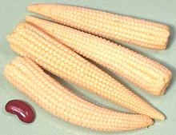

SAFARI
Users
General & History
Cultivation of the wild grasses that were developed into corn is thought to have begin in the Balsas river valley, in or around the south central Mexican state of Puebla, about 8700 years ago. There is significant controversy over exactly what wild grasses were developed into domesticated corn, but there was a great expansion of diversity about 3000 years ago. From there modern corn was developed, and continues to be developed to this day. Photo by Jonathunder distributed under license Creative Commons Attribution-Share Alike 3.0 Unported.
The kernels of the wild grasses corn was developed from are very small
and encased in a hard shell. It is thought these kernels were "popped"
like popcorn to make them edible. As better varieties were developed the
kernels could be prepared in a wider variety of ways. Spread was rapid,
and by 1300 CE or so it had become the staple crop throughout North,
Central and South America, and the Caribbean. European traders spread
corn worldwide, but the United States still produces almost half the
world's crop, with China a distant second.
Types of Corn
Different varieties of corn are used for each of these forms, selected for the best characteristics for the specific use.
Silage Corn
is used for animal feed, particularly cattle. It is harvested before the fruit has formed, when the sweetness is still mainly in the stems. The stems and leaves are chopped up and stored in tall "silos", where anaerobic bacteria ferment it, producing first acetic acid (vinegar), then lactic acid. This is a tricky process - don't try it at home.Sweet Corn
is corn intended to be eaten fresh, on or off the cob, or frozen or canned. Corn is practically the only common food product where canned is considered superior to frozen. The best results are had when sweet corn goes directly from stalk into boiling water, because the moment an ear is picked the sugars start to convert into starches.Field Corn
is intended to be dried on the cob for use in making cornstarch, cornmeal, grits, and many other products, and for feeding to hogs and cattle. Now, due to the questionable integrity of our elected officials, it is also fermented into SUV fuel, a process that possibly takes more energy than it produces, and seriously increases food prices worldwide. It does, however, keep the powerful farm lobby happy.Blue Corn
is a variety grown by the Hopi Indians of Arizona. It is particularly adapted to the dry environment they live in, and is also grown in Mexico where it is made into blue tortillas. Their bright color has been found useful for making the blue corn tortilla chips sold by Trader Joe's.Flint Corn / Decorative Corn
is very hard corn with small kernels in various colors and multi-color (calico) sold on the cob as "Indian Corn" for use as thematic decorations around the Thanksgiving (US) holiday in the Autumn. Carefully selected varieties of Flint Corn, mostly white or yellow, but in colors for the gourmet market, are use for making popcorn.Waxy Corn / Glutinous Corn / Sticky Corn
is a mutant variety developed as a stable crop in East and Southeast Asia. While most varieties contain the starches amylose and amylopectin, this corn contains only amylopectin.
Corn Products
Sweet Corn - on the Cob
[Zea mays var. saccharata and var. rugosa]
This corn is harvested in the "milk stage" when the kernels contain a
sweet white liquid. Unfortunately most people do not experience it at
its best, because it should go directly from the corn stalk to boiling
water. The problem is, as soon as it's picked he sugars start to convert
into starches. Today's very sweet white and yellow varieties have been
developed to hold their sweetness as long as possible, but it still
fades rapidly.
Details and Cooking.
Canned & Frozen Sweet Corn
Corn being highly seasonal, a large amount of sweet corn is harvested
for canning and freezing. Unlike just about every other vegetable, canned
corn is widely considered superior to frozen. Canned corn is available
in whole kernel and "cream style" where the kernels are lightly crushed
and/or chopped. Both canned and frozen corn are, of course, already
lightly cooked. A 15 ounce can holds the equivalent about 2 North American
size cobs of Sweet Corn. about 9 ounces.
Canned "Cream Style" Sweet Corn
This is not the same product you'll get by stripping "Cream Style" yourself
from fresh cobs. Our Cream Style
Corn method is almost free of skins, while the commercial product is just chopped
up corn with water and a thickener. Ingred: Corn, Water, Sugar, Modified Corn
Starch, Salt.
Waxy Corn
[Glutinous Corn, Sticky Corn; Zea mays var. ceratina]
Corn was brought to China in about 1520 and is first mentioned in Chinese local histories in 1550. While Waxy Corn is not common in the Americas, it was selected and bred in East and Southeast Asia. Today, the Asian markets in Southern California have plenty of it, pre-cooked, and in the freezer cases. Presumably it is mostly eaten cold as a snack. Compared to our Sweet Corn, it is a bit bland.
This corn contains no gluten, but gets its name from containing only
amylopectin starch with no amylose at all. It produces smaller cobs than
our familiar types. the larger of the photo specimens was 1-7/8 inch
diameter, 7 inches long and weighed 8-1/2 ounces. Many tons are now
grown in North America, but are grown under contract to food processors
needing amylopectin starch and for animal feed. As animal feed it has
proven superior to regular corn.
Baby Corn
 [Khao-pote Onn (Thai); Sali Orn (Laos)]
These very immature whole cobs of corn are quite popular in Southeast
Asia. They are easily available canned in North America, most of it
coming from Thailand. It has a lightly crunchy texture and is only a
little sweet, but it has a definite corn flavor. The largest of the
photo specimens was 3-3/4 inches long and 3/4 inch diameter at the
base.
Details & Cooking.
Popcorn
[Zea mays var averta]
Popped corn was known to the native population of the Americas for thousands
of years, in fact popping may be the way the grass ancestral to corn was
originally prepared for eating. A hard "flint corn" variety is used, dried
to the right moisture content. To pop it, it simply needs to be heated by
some means until the internal steam pressure builds up and explodes the
hull. The starch within has become gelatinized, but upon expanding it
solidifies into a foam. The photo specimens were from Turkey, purchased at
one of the local muti-ethnic markets in Los Angeles. The kernels were about
0.33 inches long, and popped very well.
Details and Cooking.
Cuzco Yellow Corn
[Maiz Cancha Amarillo; Zea mays]
This corn, from Peru, is completely dried and intended to be roasted for use
as a snack. The photo shows as packaged on the left and after roasting on
the right. Only a few pop open and they don't expand like Popcorn, but they
are soft enough to eat. Kernels are large, typically 0.9 x 0.5 x 0.2 inches
(23 x 13 x 5 mm). See recipe
Cuzco Toasted Corn.
Toasted Corn / Corn Nuts®
 [Zea mays]
This very popular snacks were invented in California in 1936 and later
renamed "Corn Nuts". By 1964 they being made from a hybrid of
Cuzco Corn that could be grown in California.
Today the name "Corn Nuts®" is owned by Kraft Foods, and they are no
longer made from Cuzco type corn. Generic products are named "Tasted Corn".
These are all made by soaking corn kernels in water for 3 days, roasting
in Corn Oil and salting. Corn, Corn Oil and Salt are the only ingredients.
[Zea mays]
This very popular snacks were invented in California in 1936 and later
renamed "Corn Nuts". By 1964 they being made from a hybrid of
Cuzco Corn that could be grown in California.
Today the name "Corn Nuts®" is owned by Kraft Foods, and they are no
longer made from Cuzco type corn. Generic products are named "Tasted Corn".
These are all made by soaking corn kernels in water for 3 days, roasting
in Corn Oil and salting. Corn, Corn Oil and Salt are the only ingredients.
Corn Syrup
This, and High Fructose Corn Syrup (HFCS) are industrial sweeteners made from corn by an enzyme and fungus process, generally using genetically engineered enzymes on genetically engineered corn. While I have nothing against enzymes and fungus, the final product may have some serious metabolic problems when consumed. It is currently the subject of great controversy between food activists and food processors. See Health & Nutrition for details.
Corn Oil:
This is one of the most common salad and cooking oils in the supermarkets. Tests by Cooks Illustrated showed it to be terrible in mayonnaise but good in salad dressing and highly desirable for french fries. It cannot, however, be used for commercial fries because it is a highly polyunsaturated oil with an oxidation number of 6.2 (vs. olive oil at 1.5 and beef tallow at 0.86 - for details see our Oil Chart). What that means, is that when heated, corn oil quickly becomes rancid, so feel free to use it for a small batch of fries, but don't try to reuse this oil.
Cornstarch
 [Cornflour (UK)]
[Cornflour (UK)]
Pure white starch powder extracted from corn has become the most common
culinary thickener, used especially in Asian recipes. It is not the most
ideal for all applications, having less thickening power than potato starch
and a light corn flavor which can interfere in some recipes.
Cornmeal
Available in several grit sizes and in both white and yellow (the photo specimen is yellow and coarse) this is simply dried corn ground in a mill. It's very popular in the American South, Italy and Ukraine. Cornmeal is used to make corn bread, batter for fried foods, and porridge, which can be made thin, or so thick it solidifies when cooled (cornmeal mush in North America, polenta in Italy, Mamalyga in Ukraine).
Precooked Cornmeal
[Harina de Maíz Precocida, Masa de Arepa, Masarepa (Spanish); Farine de Maís Précuite (Portuguese)]
Available in both white and yellow (the photo specimen is white) this
product is very popular in northern South America for making Arepas, corn
cakes very popular among all classes in Colombia and Venezuela. The corn
is cooked and dried before grinding, which greatly changes its cooking
properties. It saves tremendous labor by cooks who previously had to
do a lot of pounding to make Arepas. The photo specimen
is P.A.N. brand, made in USA under license from Alimentos Polar
International, of Venezuela.
Hominy / Nixtamal
This product is made by soaking dried corn in a strong alkali, lye-water (US) or lime-water (Mexico), until the outer hulls are removed. This process was first used about 3500 years ago in Guatemala, and has several nutritional advantages. It converts niacin into a form more readily absorbed by the body, improves digestibility of amino acids, and the lime treated version adds calcium to balance corn's excess of phosphorus. This can be made from yellow or white corn, but the white dominates.
In the photo, white nixtamal, prepared with lime, was canned, thus it
has been cooked to some extent. The fresh yellow nixtamal on the right has
not been cooked at all and is intended for inclusion in Menudo and similar
soups. Both white and yellow are also sold dried and broken (see Grits below).
For details and more information about the nutritional value of
nixtamalization, see
Details and Cooking.
Giant White Corn
[Choclo (Elote) Peruano Gigante del Cusco; Cacahuazintle (Mexican variety) | Maiz Pelado Blanco, Mote Pelado, Maiz Para Pozole; Zea mays]
This corn has been grown in Peru for 7000 years or so, and is popular
from southern Mexico to Chile. The photo specimens (Choclo Entero - "on
the cob") were purchased frozen from a large market in Los Angeles
(Burbank) that specializes in Mexican, Central American and South
American foods. The larger was 7 inches long, 2-3/4 inches in diameter
and weighed 13-1/8 ounces, with kernels about 3/4 inch across. The
Mexican Cacahuazintle is a little smaller. The names after the "|" are
"peeled" (Hominy), for use in Tamales, Pozole soup and the like. This
is traditionally done by boiling the kernels in a solution of water and
lye, calcium hydroxide or another strong caustic, then rubbing off the
peels. This also has the effect of greatly increasing availability of
niacin (vitamin B3) - untreated corn has none in an available form.
This process is called Nixtamalization.
Details and Cooking.
Masa
[Masa Nixtamalera; Masa de Maiz (Spanish)]
A dough made from ground Nixtamal (see above), used to make tortillas,
tamales, pupusas, arepas and many other Latin American dishes. It is best
ground from fresh Nixtamal and is available in that form in markets
serving a Latin American community (or at least it is here in Los
Angeles). If necessary, it can be made from Masa de Harina and water.
Masa can be made from yellow corn or white, but the white dominates,
except for making yellow corn tortillas.
Masa de Harina
This is Nixtamal dried and ground into flour to be used to make Masa whenever fresh Mase Nixtamalera is not available. Naturally it comes in both white and yellow (amarillo). The photo specimen is white.
Grits
This is simply coarsely ground corn kernels, which may be yellow corn or dried hominy (see above). It is the national dish of the Confederate States of America, but is also enjoyed by many Damn Yankees, and there's nothing Johnny Reb can do about it. Grits are cooked into a porridge, which may be eaten as is or simmered down fairly dry, cooled, molded into blocks, sliced and fried, most properly in bacon fat.
Grits should be quite coarse, but most sold in supermarkets are
nothing more than coarse cornmeal. The photo sample is quite coarse and
was obtained from an Indian (Asian) market in Los Angeles, but most of
the ethnic markets here have similar grits for their Latin American
customers. If you can't find it, grits suppliers in the Deep South are
perfectly happy to export the stuff, even to destinations north of the
Mason Dixon line.
Inca Purple Corn
[Maiz Morato]
This nearly black corn is fully mature and thoroughly dried on the cob,
so it needs to be knocked off the cob and soaked overnight, or ground to
flour, for use. The photo specimens were 5 inches long and 1.8 inches
diameter, purchased from Catalina's Market in Los Angeles, but also
available from Vallarta.
Tortillas
These are basically chapatis made from Nixtamal corn, yellow or white (and sometimes blue). It is evidence of a decline in traditional expectations among Indian households in Southern California that tortilla presses are now commonly sold in Artesia for use in forming chapatis. As with chapatis, tortillas are often heated on a hot tava, except it's called a comal. In the United States tortillas are now the second highest volume packaged bread product after sliced bread. The photo specimens are typical at 5-1/2 inches diameter and 0.06 inch thick.
White corn tortillas are generally preferred over yellow except for deep
fried items where yellow corn is preferred. Tortillas are often cut, deep
fried and salted to form "corn chips", an extremely popular snack item.
Note that in the American Southwest and along the northern border of
Mexico tortillas are also made from wheat flour. These tortillas are
less crumbly so can be made large enough to use as wrappers to make
burritos, which are not a traditional Mexican dish, but part
of the US Southwest border cuisine.
Tortilla Chips / Corn Chips
Tortilla Chips / Corn Chips are an intensely popular snack, having an excellent blend of corn flavor, salt and oil - you just can't stop eating them. Most are yellow or white, but the ones in the photo are made from blue corn. Tortilla chips are cut from rolled out tortilla stock, though if factory made it was a continuous wide band, not round pieces. Corn Chips (Frito Lay and the like) are extruded like pasta and have a coarser surface and different curl.
Corn Smut
[Huitlacoche; Cuitlacoche (Mexico) Ustilago maydis]
North of the Mexican border corn smut is a crop destroying fungus infection to be avoided. In Mexico it is encouraged and harvested as huitlacoche (literally "raven's poop") and used in various dishes. It is considered a very desirable delicacy with a sweet earthy flavor (among other aromatic compounds it contains vanillin).
It is harvested while still immature
because later it will be dry and completely filled with fungus spores.
In Mexico it is almost always used fresh, but some is also canned for
export. Efforts have been made to introduce it into other North American
cuisines, and the USDA has an ongoing experimental program, but so far
it has seen little market penetration.
Photo by stu_spivack distributed under license
Creative Commons Attribution-Share Alike 2.0 Generic.
Health & Nutrition
Protein Deficiency:
The most immediate problem for populations dependent on corn for nutrition is that you can't live on corn alone - its protein profile is deficient. For this reason beans must be co-cropped with the corn, as they are protein deficient in a complimentary configuration. The beans also fix nitrogen in the soil to provide a more fertile soil for the corn.Some time back the Mexican government decided to "help" the Huichol people, who had to work exceedingly hard to keep weeds from overrunning their corn crop. The government provide herbicides, which killed the weeds - and the beans. This resulted in impending starvation for the Huichol people. To overcome this, they sent expeditions to the United States to trade their brightly colored crafts for beans. This introduced not only the crafts, but brought the likes of Don José Matsuwa north and introduced Huichol shamanism into this country (C1).
Naicin Deficiency:
When corn was taken from the Americas to the rest of the world, many peoples found it could be grown efficiently with high yield, and their food supply, particularly for the poor, became dependent on corn. This caused a very serious disabling disease called "pellagra" to become widespread due to the lack of usable niacin (vitamin B3) in corn. In contrast, cultures in Central and South America which were similarly dependent on corn did not suffer this disease, due to the way they processed corn. This is discussed in our Nixtamal - Hominy page.Corn Syrup & High Fructose Corn Syrup:
These products, in particular High Fructose Corn Syrup, have displaced sugar as the sweetener used in the industrial production of food in the United States, particularly the production of "junk food" and sodas. The reason is, they are cheaper. The reason they are cheaper is, just as with ethanol, massive subsidies provided by our Congress Critters to keep the farm lobby donating funds to their reelection campaigns.Health advocates claim that HFCS is worse for you than other sugars and a major cause of obesity in America. The corn products manufacturers claim it is no worse for you than any other form of sugar. A recent study by the University of California concluded it is worse for you. Predictably the corn product manufacturers denounced the study as bunk - without providing any counter study or additional data. See link (C2) and our Sweeteners page.
Links
- C1 - Huichol Shamanism - Dance of the Deer Foundation.
- C2 - High Fructose Corn Syrup - Grist.org: Comments on UC Davis study, including corrections by a participant in the study.